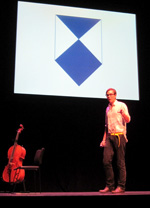

Back in September 02010, I attended the dConstruct conference in Brighton. One of the speakers, James Bridle gave a very interesting presentation on the Value of Ruins. In one part of the presentation he discussed the lose of cultural heritage, especially online. It’s so easy to delete something, because it’s only ones and zeros and when you do so it’s gone forever. I personally wrestle with the conundrum of what to save and what to throw-out. One man’s trash is another man’s treasure. By ignoring, letting things fall into disrepear, neglecting or even deleting, it has an impact on the future. What if that was the only or last copy? What makes something “worthy” of cultural protection?
I am personally a big believer in the broken windows theory, that says if it looks run-down it will only get worse. Crime begets crime. A building with just one broken window is much more likely to degrade than a building without. We saw this play-out in the 01980s with the adimant re-painting of subway cars in New York City. Having just a tiny bit of graffitti was an invitation to add more and more, until the paying customers felt unsafe. The 01984 film Style Wars is an interesting look into the battle between taggers and the Manhattan Transit Authority.
A similar situation occurred post-Katrina hurricane in New Orleans. The “Gray Ghost” would re-paint any graffitti that he saw. This was logical according to the broken windows theory, except that he was painting over famous graffitti works by Banksy. So, where does art stop and vandalism begin? According to the law it is pretty clear, it is vandalism, but that is not what society says because we monitarily value Bansky’s work. If that is the case, should we paint over any graffitti for fear that it MIGHT be artwork?
What about all those rude comments in public toilets or carved into tables? It is certainly interesting when we find old Victorian graffiti and we are glad no one removed it, but at the time it was a nuisance. Having it now gives us a window into the past. In Edinburgh castle, there is a wooden prison door that is carved-up by the then inmates. It has possibly, one of the earliest known cavings of the new United States flag. These are historically significant, only in retrospection.
All of this makes it difficult to throw things out for fear that you might be losing part of the past. In a digital realm, it is much easier to avoid deletion. Hard drive space is cheap and near infinite, so saving everything is not a problem—being able to opening them in the future is another story. But what about the physical? The British Library has one copy of every book printed since 01662, it’s part of the UK’s Legal Deposit. The Library of Congress in the United States has a similar requirement.
Physical things take-up physical space. If we don’t want to lose the past, we will need to make some sacrifices. Some of us adore old architecture, but at somepoint that was new architeture which might have replaced even older architecture. Why must one building—the one we see today, be saved when it replaced another previous building which we didn’t see? It is the same argument that the previous building owners tried to use, unsuccessfully. Just think, if we move this back ad infinitum, then we should never have left caves because everything we built would ruin something that was previously there. We shouldn’t have built that first farm, because now we have lost that forest or field. The first building caused something else to be lost, roads, highways, airports, etc. Existing infrastructure we assume is OK, but to build more is a heresy. I am sure that is what people say 100 years ago too.
How do we know what is culturally significant and what isn’t? Maybe we can’t for present day objects, so we need to try to save as much as we can or atleast an atiquate representation. For historical objects we already know the ones that are certainly protectable and they should rightfully be, but knowing what will be historical is difficult.
Throughout history, as wars were fought and territory gained, some cultures were iradicated and their past was systematically purged or rewritten. To prevent this, the Hague Commission on Cultural Property in Armed Conflict in the year 01954 decided to mark objects of cultural significance with a symbol so others knew not to destory it. Doing so would be a lose to all of humanity.
In James Bridle’s talk there was a single slide with this symbol. It is a beautiful and simple design. I would assume there is a commission to decide who can and can’t add this symbol to their building, otherwise it would get stuck-up everywhere and the meaning waterdown and lost. Like claiming everything is a medical unit and not to be fired apon in times of war.
At the time I’d never heard or seen this symbol, which might be a good thing since preparing for armed combat isn’t something we should need to know off the top of our heads, but it intregued me to see how many other’s knew what it meant. In my mind, the best way to expose more people to these sorts of things is through the medium of t-shirt. So I found the logo on Wikipedia and sent it to a t-shirt printer.
I am now in possession of a bright yellow shirt with the logo on the front, it was later pointed out to me, more aptly it should also be on the back! Wearing this shirt declares that I am a culturally protected object in times of armed conflict and should not be damaged. In truth, it is a dilution of the symbol’s intention, but I think it is making more people aware that it even exists. Case in point, after showing the t-shirt to a few friends, I got an email with a screen caputure of a BBC TV show. In the background, on a musuem in Germany, there it was—the symbol.
Now friends see it in all over the place and in places they have walked by several times without ever noticing. They are telling their friends about the symbol on the wall and spread it futher and wider than before, and it all started with a humble t-shirt.
In more recent months and weeks, we have seen the fall of the Tunisian government and protests in Egypt. They run the risk of looting and destruction of their cultural heritage. News reports state that people in Egypt have formed a human shield around the museums to protect them from the protesters. This is incredibly forward thinking and putting their society and the future before their own lives. Maybe after these uprisings a few more people are now aware of this symbol and protect their cultural property as a result.